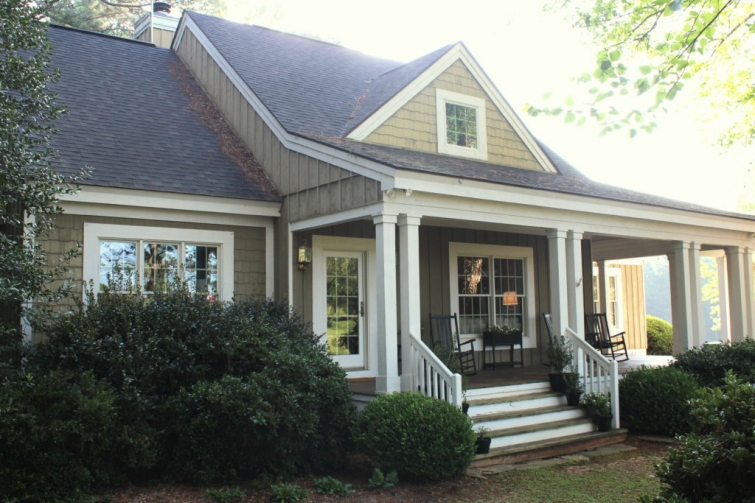
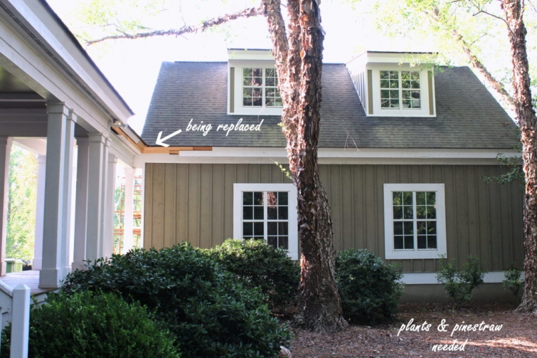
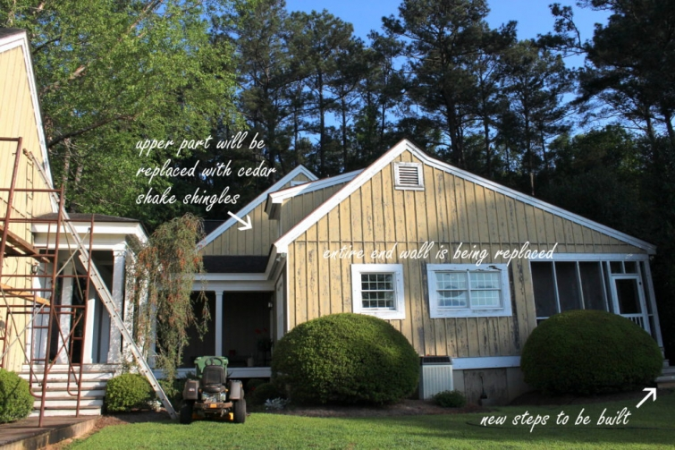

.png)
.PNG)
.PNG)
.PNG)
.PNG)
.PNG)
.JPG)
.JPG)
.PNG)
.PNG)


At first glance, you would think this house of ours – this house we talk a lot about here – is in good shape. But guys she is 21 years old, and if you look closer….
You will see that she needs some work on the outside…
some major work.
So she is currently getting her well deserved make-over.
 The garage was actually the area that needed the most work, so that is where the first of the exterior painting was done. Termites had made a meal out of part of it, and thanks to a local pest control company, that has all been taken care of, and the “eaten up” parts have been rebuilt by my handyman husband. 🙂
The garage was actually the area that needed the most work, so that is where the first of the exterior painting was done. Termites had made a meal out of part of it, and thanks to a local pest control company, that has all been taken care of, and the “eaten up” parts have been rebuilt by my handyman husband. 🙂

Deciding on the new paint color took me FOREVER. I tried out waaaay too many samples, but you know by now that I am a color-freak. Color makes a huge difference in a space to me, and when you get the opportunity to change a color only every 7 or 8 years, it’s a big decision!

Originally, I was thinking of going with a very dark paint for a change – which is why you see those darker shades up there. I really like the color on James Farmer’s house, and because he lives in our little town, I have driven by it several times trying to picture that color on ours. The side of his house faces the road – not the front, so this photo is from Southern Living. (Both of our homes were built from Southern Living plans.)

But the more I thought about it, and the more I tried to picture it, I decided against that dark color. We have a lot of white trim like he does, but I think that dark brown works on James’ house because his roof is light. If we put that chocolate color on ours it would be way too dark with our dark roof. So I ultimately decided on a shade very much like our previous one. While I was debating color choices, my husband researched paint brands to find out which paint seems to be best for our location here in the South. He wants it to withstand our heat and resist mildew and fading. After much research he decided Sherwin Williams‘ Emerald line was the paint he wanted. So we are going with the color Quiver Tan in that line of paint.

My husband has finished two sides of the garage, and he started back in…November…yes 5 months to get 2 walls done. Granted, one wall required a lot of construction work, and getting our cedar lumber here was a problem. Someone was going to deliver it from Atlanta, and that fell through after 45 days of back and forth “I will get it to you.” Ultimately he ordered it from a local building supply. It’s here, and now there is no more hold up on it. Hallelujah!
He has tried unsuccessfully to hire out some of this work, but each time the people come and look and then never come back. 🙁 (And it is not the pay…they set their own salary.) Finding good help around here for a small job is not easy. Soooo…I’ve got to help with this. When I started the blog 5 years ago, it was easy to keep up because comments and emails were so rare, and I was spitting out posts right and left. As the blog grew, keeping up with the correspondence began to take longer and longer. My husband was of great help with cooking and laundry then – allowing me to work on the blog. Once he retired as city engineer a year ago, I thought he would continue helping, but he took on a consulting job. So he has not been able to help with the inside work here, and keeping up the house, laundry, cooking etc. along with blogging has been a challenge.
The exterior of our house needs a tremendous amount of work – much scraping, caulking, construction, and painting. Not to mention, the yard is also calling for us to give it some MAJOR love. My husband and I will try to do everything ourselves. So for the next couple of months, I am going to be a painter and a yardman. We even purchased a new lawnmower just for me – a zero-turn model with a steering wheel. (I like mowing grass. 🙂 )

I have to help my husband because there is no way he can do this by himself…at least no way if I want it finished in this calendar year! Soooo….I am going to let the blog go….at least for a few months..maybe longer if needed. I hope you understand my need to do this.
In the meantime, I am going to leave you with some reading assignments. 🙂 (The teacher in me couldn’t resist giving you a little homework!) First, Kristy Harvey’s new book, Slightly South of Simple, releases on April 25. I had the opportunity to pre-read it, and it was sooo good! Great believable characters with fun family dynamics, set in a Southern beach town…with a little romance and humor thrown in for good measure. It was absolutely delightful, and I can hardly wait for the second book in the series! I know you will love it too. 🙂

Slightly South of Simple: A Novel (The Peachtree Bluff Series)
(My Amazon affiliate link.)
Second on your assignment list:
Mary Kay Andrews’ new cookbook…yes a cookbook! 🙂

The Beach House Cookbook
(My Amazon affiliate link)
Just reading the preface alone will make you hungry! I don’t normally make a point of recommending the preface, but face it. This is Mary Kay Andrews – a novelist. So the preface to her cookbook is a pure joy to read. And there are all those delicious recipes…and the photos…and it’s at the beach. What more could you want? 🙂 Plus there are party menus all planned for you. Perfect for your summer entertaining. I think you will definitely want to add this one to your cookbook collection. It releases May 2. And by the way, she is as biscuit-making-deficient as I am, so even if I try no other recipe in the book, I am looking forward to trying her biscuit recipe.
Next up on your homework list…a house book!

A Place to Call Home: Timeless Southern Charm
(My Amazon affiliate link)
James Farmer’s interior design book releases August 29. I hope to be back before then, but if for some reason I’m not, I wanted to be sure you knew about this book. Of course the interiors will be beautiful, and with talented Emily Followill doing the photography, the book is bound to be gorgeous.
One more – just to let you know about this one in case you want to pre-order it:
Jan Karon’s latest novel in the Mitford series releases on September 19. If you are a Mitford fan (like I am) you will certainly want to read this one. Visiting Mitford is like visiting with dear friends, and I always treasure her books. (Right now the pre-order is on sale for about $10 less than the retail price.)

To Be Where You Are (A Mitford Novel)
(My Amazon affiliate link)
Now when I was teaching, we always had a variety of activities for our students because they all had different strengths. Some students learn best through reading…others through listening. With that in mind, here are two more assignments for you – tailor-made just for those of you who do not like to read. 🙂
If you have not been watching HGTV’s new series, Home Town, now is your time to start. You can thank me later. 🙂 Tuesday nights – 10 p.m. (or check your local schedule.) It is such a great show with gorgeous decorating that respects the history and location of the homes there in Laurel, Mississippi. Here are just a couple of rooms for you see from the series:


Aren’t they pretty? 🙂
And finally…for all you auditory learners.
John and Sherry Petersik have been around with their blog Young House Love for about 10 years now. You may or may not like their interior design style, but they are the CUTEST couple with a wealth of knowledge about diy home projects. Well, they have a podcast, and a new one comes out each Monday. They are such fun to listen to as they discuss a variety of topics that are applicable to decorating and/or renovating, and on top of that, they are renovating a house at the beach. So check out their podcast info here. You can listen while you do the laundry or cook dinner. Easy peasy!

And that’s all I have for you for now. The blog will still be up and you can reference old posts through the archives, but the comments will close here in about 10 days. I am going to try to continue posting some on Instagram (instagram.com/talkofthehouse) and some on Gabbie’s Instagram account as well (instagram.com/gabbiethelabbie) although I am not sure how frequent that will be. Thank you friends for your patience as we try to get some major things done around here!
Until next time…


.PNG)
Hello Kelly,
I have loved you home since the first time I saw it. I have pinned it, bookmarked it, and even printed and clipped it for my Idea book and board. I especially loved it at Christmas. We are starting a remodel soon also, and I am inspired by many of your homes features and will be incorporating them into our remodel. So beautiful!!!!
I also loved that the feature about the Tennessee Farm House of the Schmidt’s was added to this…..I especially love all her drapery fabrics. I would love to know where the textiles were purchased. I would love to have some in my home…..if you can help me find them, that would be great!
Again, happy remodeling!!!!
Good luck with all of your work! IT will be fabulous!Looking forward to seeing your progress!
It sure will be fun to see your finished product!!! Thanks for the book recommendations. I finished Kristy’s book quickly! Need some more to read.
Enjoy that new lawn mower!!!
Mary Ann
Hi Kelly, Happy remodling! I will miss you. Ive taken a little time off myself. I retired on Jan. 31, 2017. I have missed you, but I’ll have fun “looking back”
Kelly, I wish you well with your remodeling! I am going through big changes this spring as well. I’m retiring from teaching second grade, after 25 years. We’re packing up our house and getting ready to move/list our house to sell/finish cleaning out my childhood home to renovate. I look forward to seeing your finished project! Wishing you the best!
Kelly… It seems there are certain seasons in life where a break is mandatory. This past year, my “young” (55yo) husband was diagnosed with an aneurysm in his ascending aorta. It has changed what we had considered so normal in our lives, and everything has become a new normal. He has weight restrictions and lifestyle changes that make us take a step back and determine what we can do ourselves, and what we need to rely on others to do. In the meantime, taking a break from some of my volunteer duties and scaling back on the number of days I work has been a MUST because there is simply not enough time in the day to do it all otherwise. Breaks are a good thing, but the peace and serenity your blog brings to so many will be missed, so hurry back! I can’t wait to read some of your recommendations, and also have found some of the IG friends you have recommended so I will definitely be checking back in the archives to remind myself of the little things I had intended to pursue upon your skilled observations. Take care and enjoy your summer!
Oh Kelly, I am going to miss you so much! But I understand completely.
Your blog is so popular and you have so many fans…but you have to do what is best for you. Good luck with your to do list. Cindy
Best of luck during your summer work project….I understand how those go, especially as the handywoman! We just had a new roof installed. Enjoy your time in the yard, and make it pretty like you want, without TOO much upkeep. Will miss you and your blog — but understand what must take precedence right now. I’m sure when you return, you will have stories to tell, pictures to share! I guess it’s time I get on board with instagram, uncharted territory for me as well. Goody! a new Mitford book. And I was caught up….
I was ooh-ing and ahh-ing all through your exquisite photos and story telling. Enjoy the journey of revitalizing your home and please come back when you are ready! You may inspire me to delve into Instagram, so far uncharted territory for me! Have a blast, Kelly!
Kelly,
Your blog is my favorite, but I understand needing a break to get your house in order. Please don’t stay away too long and try to stay on Instagram.
Good luck in your home.
Jeanne
I’m going to miss you! But what a blessing you’ll be to your sweet hubby. Can’t wait to see the end product of all that hard work so be sure and come back to us! And we’ll want to see pictures of Gabby, too, since she’ll be growing up! 🙂 Enjoy your summer….I know you won’t be working the entire time. You both will need a break!
Kelly, I absolutely admire the fact that you want to be a help mate to your husband. What a blessing you are to him to put him first. I will definitely miss you while you are away, but hopefully you will be on Instagram!! That way we can stay in touch and see what you are up to. I’ve been following your blog for many years. I’m pretty sure shortly after you started. Your blog friendship is a blessing!! Enjoy your summer!
Best wishes to you as you make the commitment to help your husband with your house project. What a blessing that he has you to help and work on the project together! I know it will be time consuming and at times, tough – I don’t envy you, that’s for sure! I will look forward to seeing posts on Instagram when you are able to post and pictures of the house when you are done! Blessings to you….
That sound you hear is a giant ‘sigh’ from me…not a happy or unhappy sigh – just a sigh. You see, yours is the third blog I’ve ‘lost’ in the last year – mostly due to the writers moving on to other things. I’m not saying you’re going away forever – only you can answer that. Just noting that for three plus years now there have been five to six blogs that I have followed regularly (some decorating, some humorous, informative writing). I’m now down to one regular writer and two others who post MAYBE once or twice a week. Yes – life moves on. New demands on our time bring about change. I’ll catch up with you in three months and see if you’re back. I suspect that once you adjust to NOT writing/posting – you may find other creative outlets for your prose. You will always be one of my faves when it comes to creativity on a normal budget! God bless you. (And best of luck in all your projects – though I don’t necessarily subscribe to luck.)
Wow, sounds like you will be busy for a good long time. Houses do take a great deal of time and talent whether yours or hired help. We have had the same problems with finding outside help.( Our properties are 51 & 20 years old, and we are in our mid 70s. Not a good combination.) So now is definitely the time to act.
Yours was the 1st blog to which I subscribed, it is still my favorite.. Selfishly, I hope you will return to us; however I will understand if that becomes impossible.
Wishing you all the best.
You will be missed and so many of the prior comments say it so well. Having your blog pop up on my email really made my day. It would allow me a break in my work load to dream just a bit. I appreciate your attention and detail to a style I can associate with. All the best on your endeavors.
Hi Kelly. Well, it looks as if everyone is in agreement – so happy that you are taking the time off to finish some projects, and yet so sad that we won’t hear from you all summer. Enjoy your time away, everyone deserves some time off once in awhile. I too will be spending my summer on household projects, with a little fun mixed in. I will wait, as patiently as possible, for you to return in the fall. Happy Summer!
I meant to say thank you for the “homework” 🙂 I’m looking forward to reading the books …I’ll keep checking Instagram but I totally understand that you may not have time to post ….take care
Rosemary
Hi Kelly! Of course I will miss you! As I’ve mentioned before I find reading your blog leaves me feeling like I’ve had coffee and a chat with a good friend … you write so well and over time it’s been lovely to read about your family and travels as well as your home etc. and of course Gabbie! I’m always amazed at how much you manage to fit into your life so I understand your need to take a break.
Thank you so much for your help with our travels in the US, we’ve visited places, that I’ve loved and wouldn’t have even known about if it wasn’t for you …I’m hoping to visit Georgia in the next year or so, maybe we could have an actual coffee together! 🙂
Take care Kelly, I hope all your renovations go smoothly, without too much hassle and that you and your family enjoy a wonderful summer. Hoping to hear from you again when you feel ready …
Rosemary
I will miss your blog posts and updates, but I completely understand how difficult it can be to try to juggle too many things at once. Best wishes on your home projects and I hope you have an enjoyable summer with your family!
Hi Kelly! I understand about having to do home work; our home is 25 yrs old and we’ve been trying to hire someone to do small jobs, for quite some time, but I think that I may be replacing as much of the wood rot as I can because no one returns our calls! It seems that if it is not a large project, the contractors don’t want to be bothered.
You have provided me with great ideas and confidence for hosting parties. I find your posts comforting; always a pleasure to read. Thank you, Cindy
First of all, I will miss your blog. It’s my #1 blog to read when I go to Bloglovin. I honestly do understand the importance of updating our houses. We are almost finished with our small bathroom off our bedroom. Waiting to have its floor tiled this weekend. New carpet is in the future for four bedrooms, hall, and stairway. I can’t imagine how to move the furniture to accommodate the carpet installers. But I know it will be done somehow. Twelve years ago, we did a complete kitchen remodel. I’m looking for new pendants and a new type of look over our table, and new window treatments. Retirement has flown by, 5 years the end of May.
Thank you for sharing your visits to places I hope to travel and spend some leisure time. God bless you and your family.
I will miss your posts but understand, totally. Upkeep of a home is never-ending. We have lived in our home for 19 years , after building it. Slowly it also needs TLC. Will look forward to seeing you in late summer?? Take pictures along the way!!!
Good gracious, I had so many mistakes in the comment ijust made above,
That’s what I get when holding a baby with one arm and typing
with my thumb on the other hand on the iPhone. Hope you can decipher. I will miss you.
DiAnne
Kelly,
I love, love your blog and I also totally understand needing to take a break,
My daughter has taken several breaks from her
Blog (numbersandnails.com) when she had her babies. The youngest is now 7 months old now and she thinks she is reassuring to give utva go again.
I think I told you that you would be busier in retirement than you ever were @ school.
I love that I can follow you on Instagram. That is like a mini blog.
I will read the books you suggested. My daughter loves the you ghouselove podcast.
So, can’t wait to see what you accomplish and we will be here waiting when you come back to the blog.
💕DIAnne
Many good wishes to you as you tackle your home improvement projects! I’m sure many of us will be looking forward to seeing the results of all you have planned. Until such a time, thank you for living your blessings and sharing your talents.
Love and Joy to your heart,
Pam
We’re sure going to miss you! But this is what happens when you retire. 🙂 You wonder where the time goes and how you’ll find time to get things done. Hope all you have to do goes smoothly, and safely. You’ll have so much to tell and show us when we all meet up again. God watch over you and your family.
I will miss you Kelly! I think I am your biggest fan ;). Sooo, this gives me a chance to get some work done while you are getting some work done. Plus, I use your blog as a vacation guide. My last trip was Charlottesville so I have some catching up to do there also. Thank you and have fun!
I am going to miss your posts and the peeks into your beautiful home! But I will be waiting when you return. Enjoy your home projects. I am sure they will turn out beautifully! Happy Summer!
Kelly,
I love, love your blog and I also totally understand needing to take a break,
My daughter has taken several breaks from her
Blog (numbersandnails.com) when she had her babies. The youngest is now 7 months old now and she thinks she is reassuring to give utva go again.
I think I told you that you would be busier in retirement than you ever were @ school.
I love that I can follow you on Instagram. That is like a mini blog.
I will read the books you suggested. My daughter loves the you ghouselove podcast.
So, can’t wait to see what you accomplish and we will be here waiting when you come back to the blog.
💕DIAnne
We will all be here when you return, and look forward to seeing the completed facelift, Kelly!
So happy for your adventure. Can hardly wait to see the finished product. Thank you for so many things: book recommendations, cookbooks and recipes, tv shows that you enjoy, home tours, new places and getting to know you and your family. All your blog friends will be right here when you return!
Hi Kelly,
I totally understand the need to get things done around the house and helping he “hubs”. You gotta do what you gotta do. Enjoy your fixing up and we will be here when you get back. 🙂
Hi Kelly, I’m sure all this work will be worth it in the end. (The joys of home ownership!) When you mentioned the new color for your house, it sounded familiar. I dug out my paint chips and I have Quivar Tan in my entryway! I basically used that paint card for my all my interiors. Mostly Relaxed Khaki and Universal Khaki with some Wool Skein. I’m sure you will like the color. We also used the same brand of exterior paint in a custom color and it has held up very well with our wild Midwest weather. I hope you will have some time to enjoy life during the next few months. I will be eagerly awaiting your return!
Carol
This makes me sad. I know I am your biggest fan… with Katrina a close second. Your blog is the best and most inspiring one for me. As I have shared photos with you, you can see your inspiration and influence. I hope you will document your work so you can share it with us when you return. You will return, right! Enjoy your time away and hurry back! You are such a worker bee!
I’ll be here when you get back. Enjoy your time working on that beautiful home.
Kelly, I will miss your words of wisdom, and of course, your great pictures and ideas. But, in tackling all these renovations, please exercise some caution. Last fall, while storing my mower for the winter, I pulled a groin muscle. I was out of commission for 2 months! It meant physical therapy twice a week, and a curtailed schedule. I couldn’t even make my plane trip to see my new granddaughter in New York. Even today, months later, I’m not back 100%. Be careful ! Thanks for the reading list, especially the Jan Karon book. I’m pre ordering right now. It will be a birthday gift to myself. Please take care, and good luck!
Oh…I hate to see you go but completely understand the need. I too have a handy hubby that I need to help (occasionaly). Here is to hoping you get all your projects done in record time so (selfishly) all of us can enjoy your posts again. You will be missed because your blog is one that I can’t wait to read each day. See you in a few months back here…I will definitely keep checking in.
So sorry to see you go even for awhile but I get it. We do all our own work, annual maintenance of gutters every June ( winter in S.Africa)such as scraping and painting etc. We do all major work as well when required which friends don’t understand but help is scarce and expensive here too when they bother to turn up. I don’t want to have to do a whole lot of work before we sell one day or take a big hit on the price because of the condition of the property, which we have seen friends do.So we stay on top of it. So rewarding when it is done. I also like to mow grass but we only have 3 small grass areas so I do it with an ordinary electric mower. Best of luck and pace yourselves.
We’ll miss you while you’re gone, but I am a firm believer that I don’t want blogging to be a chore for ‘my’ bloggers, so please just blog when you feel like it and not because you feel you have to!
On that note: as others have said, I in no way expect a response if I leave a comment. It’s lovely to get one of course, but with the number of comments and readers you have now I personally would find the prospect of responding to everyone overwhelming. It is (obviously) your blog and your choice, but I just thought I’d pipe up to say I have no demands in that area, and suspect that most, if not all, of your readership feels the same.
I wish you lots of luck and enjoyment in your house ‘sprucing’. You have a gorgeous home, thank you for sharing it with us.
Glad that you are taking the much needed plunge to just enjoy your summer with dear “hubs”. When the nest is empty it takes you back to those early years, when it was just the two of you working together. The blog memories will be great but there is a season for everything. Enjoy getting down and dirty fixin up your place. Then you will decide, “Hey let’s sell and move to Seattle!” Jk thanks for the blog!
Dear Kelly,
Since you are my favorite blogger of all times, I will miss you……
But, I wish you and your husband all the best with the renovation of your home and I hope everything will turn out exactly how you want it to be. It will be so nice to have a perfect home at christmas. So, enjoy the proces and the result ;-))
And thank you for all the inspiration. See you on IG and hopefully someday back on your blog.
With love, Paula
Okay, maybe I missed something from earlier blog posts, but would you please let me know which city did your daughter (former Disney employeed) decide to work in? And I wish you the best of times working on your home and lots of patience, too!
———————————————————————
You didn’t miss it after the Carolina travel posts. It was back earlier that I mentioned she had accepted a position in charge of catering at a large event center nearby. So she has moved in with us temporarily (probably a couple of years) so that she can save a lot of money and get more experience under her belt. Then her plan is to move to Asheville. She loved that city more than all the others and hopes to be able to get into wedding planning there.
Thank you for the good wishes for all our home work here…lots of patience is definitely needed! 🙂
Kelly
You will hear no complaints from me because our house was 21 years old in March. We are going through the same process. I have enjoyed every post, every inspiring piece of creativity from you, and every invitation to meet your family and fur baby. You have graciously invited us on vacations, allowed us to be present at the making of glorious family memories, and trusted us to be understanding during times of loss. Thank you for all you have done to enrich our lives. Thank you so much. We Will Miss You! Be safe. May all your renovation dreams come true. Until we get to see the fruits of your hard work, I will be reading your picks! Best Wishes!!
Dear Kelly,
I don’t blame you one tiny little bit. You deserve a break today! (Someone named McDonald once said this, LOL.) I’ve often wondered how you managed to accomplish so much. It must be time for something else. You’ll know if you can return with renewed spirit and if the time is right or if it’s time for something else entirely. I trust you to do the right thing for yourself. Just know that you made an indelible impression on so many of us out here. This will be our time to go back and read the older posts that we may have missed. So, we’ll still be reading about you while you mow your lawn!! God bless you, Kelly, and enjoy your summer.
Sweet Kelly, I can’t wait to see the result of all your hard work come August! My husband does all our remodel projects and goodness it is time consuming! This gives me something to look forward to as summer ends! It makes me happy to know I may still see you on IG every now and again. I will for sure read James Farmer’s new book when it releases and I was already planning to buy Mary Kay Andrew’s cookbook. You know you are my ALL time favorite blog ❤️!!!!! Don’t work those creative juices too hard and I’ll “see” ya in August!
Thank you for all you have written. This is my favorite blog and I will miss you but certainly understand changes in life. Thank you also for your kind reply to my question about rain and your porch. Wishing you easy restoration…if that ever happens.
No apologies needed. Everyone needs a break and anyone that owns a home has to do the upkeep. I will miss you and all your wonderful and creative ideas. By the way, I love the color you chose. We have the same color but a different brand of paint. It has been on our house for thirteen years and just now it is starting to fade. We too will be painting this summer. I love the idea that you and your husband are a team and will be working on this project together. That’s what it is all about. Hope you are back before the holidays. Have a good summer.
Dear Kelly, I’ve never understood how you did all that you do! We understand and will be patiently awaiting your return. I cried when I saw the new Mitford cover. Take gentle care~Julia
Major undertakings take attention and time. We will miss you here, but I would say helping your husband may be a priority! I always tell my kids, “In a hundred years, what is going to really matter?”. And I think issues of the heart always win. Have a wonderful summer and I hope you scheduled some fun time for the two of you.
Oh, I’ll miss you, but love the reading assignments. Hope all goes well and stay safe up and down those ladders!
I so understand the need for a break and to focus on your home…our home is 24 yrs old and we are always having to do something to it! I will miss your fun and creative entertaining ideas, tablescapes, etc, but hope to see you back in the fall. Downloading the recommended podcast tonight.
Warmly, Tamara
Will miss you for certain- but I understand your need to cut back.Your blog is a favorite because of you. I appreciate your perspective and enjoy hearing about your family. Since my retirement from teaching 3 years ago, I have been working on different projects on our home.. My husband joined me in retirement last year and we have continued to tackle different projects with the idea- if we stay in our home we have lived in for 40 years we need to do a number of things. Or… if we move to Oregon to be closer to our children and their families- we need to do some things before selling. Well, we did buy a home about 45 minutes from each family. So no more of my little La La Land cottage home but family is so much more important. So now we are jamming. The home won’t be available until July thank goodness! We are replacing lattice fences, stripping wallpaper, painting,general repairs, and trimming back my runaway cottage garden.The home is only 2 years old so we will be adding character but not doing repairs! More time with family We are excited and so are the grandchildren (Thank goodness) So best of luck to you and I will go back to your archives for inspiration. Take care
Lani
I will miss you!!! And we must be sisters because I am also anticipating the Mitford Book and reading the cookbook from MaryKay Andrews and I have been watching the preview pics from James Farmer and his book. Hometown is mine and my husband’s new HGTV fav. Maybe we will take a ride to Laurel, can’t be too far from Birmingham! Have fun in your freedom from blogging, but I hope you will miss it and WANT to come back and visit us! You will have to share your progress and any news you have with us.
I will want to get your book recommendation since I seem to have the same taste as you in authors! lol! I need a new novel to read.
I will soon be free for the summer as well, as Bible Study Fellowship finishes up our study of John (Romans is coming next year! You should look up BSF.org for a location near you.). Currently we also keep two grandchildren on Thursdays, but we will be free when school is out and their momma has summer off. Our time will be free but the yard work will be calling. Lol!
Have a wonderful summer, dear friend!
I hope your projects go well and you two can get them done as planned. It’ll feel so good when everything is finished! I can imagine how much you’ll enjoy your freshly spruced up home during the fall and Christmas holidays. You’ll be so glad you did it.
I’m glad for you that you are able to take a break when needed. I will look forward to your return and seeing your finished projects! Have a wonderful summer and be sure to plan some fun, too!!
Kelly, you will be sorely missed here but you must feel such a sense of relief knowing you have made this decision. How fortunate both you and your husband have the time and skills needed to restore your beautiful home. Just think of all the blogging material! Hope all goes to plan and you know we will be here for you whenever you decide the time is right to share once again. T
Blessings to you and your husband!
Hold on! What am I to do? If I lived closer I would drop by with afternoon treats.
Now for the teachers assignment: keep a journal, take care of yourself and make the hard work fun. Make this time with your husband special.
Missing you already!!!
Oh my! I will miss you and your wonderful blog. Please let it be only few months and come back soon. Best of luck with your projects. Just know how much I’ll be looking forward to your return! ~Anne
I too will miss seeing your posts but you’ll need lots of energy and time for the redo. We will so look forward to your return and can’t wait to see the results. Thrilled that you included a home-work book list. Thank you for all you do.
I think I found your blog two or more years ago and I was so interested I went back and read every single one to the beginning. Waiting to hear from you again. Take care of yourself.
I have had cement floors in various states of repair since Christmas, so I can honestly say I am with you! My wonderful husband says wood floors are going in in May – unfortunately I forgot to ask if he meant this May! From your recommendation, Slightly South of Simple will be on my book list and looks perfect for a summer read tor our bookclub! Best of luck on your refurbishments. I will look forward to pictures when you have finished. Your taste is always so welcoming. 🏡🔨🏡
As others have said….whaaaaaa. I will miss your posts but will look forward to your return—–with new stories, adventures, and pictures of your work!
Thank you so much for sharing, much appreciated but hurry back!!! You will be missed!
“Home is where we start from.” ~ T. S. ELIOT
Kelly,
May your “journey” be its own reward.
Wishing you a MINDFULL spirit and many blessings. Be SAFE and HAVE FUN!!!
~❤❤❤~
As sad as I am that I won’t have your blog to look forward to for a while, that is selfish on my part and you have earned a “break”. HA! Some break! But I understand, and we do lots of our own work on our house as well. Hurry back, with pictures, please!
We’ve been rebuilding our home for the last 5 years. I can soooo relate. I will say, you will need a break for yourselves every so often. Don’t neglect!
It is so fun to sit and look around and into the future. What can be and what will be is such an encouragement. Enjoy!!!
Totally understand Kelly. We are doing the same updates to our beloved home of 20+ years. And after we finish it all we plan on selling within 6 years because no way are we updating this one again. Need to downsize and I want a ranch style for retirement. Enjoy your summer and please come back as soon as things settle down. You are a favorite and friend to so many here in the blog world. So long for now!!
This is sad news indeed for your readers, myself included. Your posts are so carefully crafted and detailed. I can imagine the hours it must take to create the polished posts. So, enjoy your time off. Not sure how much fun it will be to take on the renovation tasks during the hottest months in the South but I’m wishing you much success. We will all be waiting to hear the details when you return!
Will miss your posts for sure (especially the Inns and Lodges from NC trips) so hurry back please. Wondering if it’s really necessary to respond to comments that don’t ask questions? I usually leave a comment to show appreciation for the post and don’t expect a reply. Wouldn’t this make your posting easier?
I have enjoyed reading your blog. I love your design, food, travel, and book ideas. I understand the need to refocus. My yard and house is calling my name. I hope you will return to blogging every now and then. Enjoy the time!
Well…not going to lie…I will miss your posts! But, totally understand. Maintaining a house and yard takes time…especially if some sort of remodeling is involved. We will be replacing our deck ourselves in about 2 months…have 2 trips to take first. Always something…isn’t there? Good luck on your projects…and most importantly….have fun! 😉
I do understand needing to prioritize house and yard, but I also really hope you will be back. I found your blog only a few months ago, but have truly enjoyed following you and seeing your great design ideas. Best of luck on those projects!
Thank you for the book recommendations! We must like the same type as your suggestions are always great! I love YHL has a podcast! I only listen when I take a walk and have found it to be very motivational! I’m usually done with my 3 mile walk before I want to be! I find myself laughing as I walk.
I understand your need for a blog break- as long as you promise to come back! I don’t envy you all that work, but it will look so fantastic when it’s all done! We had the entire exterior of our house done about three years ago. My husband was going to do it- but installing Hardie board is not an easy task. We ended up hiring it out and added limestone to the front. It was the most expensive project we have done to date- mainly do to the labor cost! I’m glad that it’s done and should not need to be touched for 20 years- which b then we probably won’t live here! Good luck and be careful! A slip off a ladder can be dangerous! Please wear sunscreen as well!! I’ll be so excited to see the finished product! Have a happy spring and summer.
Kelly, I’ll really miss you! Selfishly, I hope you will come back before too long, and please do check in periodically. You taught me to unleash my inner buffalo plaid that I had never understood I liked. 😏 Have a great summer! ~Ann
Best of luck with all of your projects and thank you for sharing with us for the past five years. Can’t wait to see pics of the completed projects in the future as your time allows. There’s no place like home! ❤️
I will miss your wonderful blog Kelly. I will be sure to look up some of those books. Love the posts on Instagram and would not want to miss out on Gabbie’s posts. However I have changed my Instagram name to thehappykookaburra so you will know it is me. Still have not started my blog, but IG is giving me enough creative outlet at the moment. I will be thinking of you working hard Kelly. Much love Gabrielle x
Kelly,
You know I’ll miss our visits (virtual, of course) but I completely understand. Good luck with the projects. We just finished a lot of house repairs in preparation to sell our house. It took Mr. B all summer last year to complete the repair work from dry rot and termite damage, so I understand.
I’ll look forward to your return sometime late summer or early fall.
xo,
Karen
You will be missed and I hope you will find the time in the future to blog if even only occasionally. You have a great talent for it and I have learned so many things about decorating from you. I do understand your priorities however, and can only imagine the time it takes to put out posts like yours. Enjoy your time off and I will probably be looking at former posts for inspiration from time to time. Thank you for what shared thus far!
Waaaaaahhhh! I am sad, but completely understand! I don’t comment very often, but I have followed your blog for quite a while — it has been one of my favorites! I hope everything goes well, and I look forward to your return.
I’ve always wondered how you get done all that you do already, so I completely understand your taking a break in order to tackle your latest house project. We’ll surely miss you while you’re gone, but you’ve left us all an extensive record to dip into for inspiration “fixes”. Also appreciate all the recommended readings, “watches”, and “listens”. My husband has family near Laurel, MS, so I’m especially thrilled to know about Home Town. The Young House Love podcast sounds fun, too, and I’ll give that a try.
ALL THE BEST to you both as you refurbish and rejuvenate! Wishing you a wonderful summer! Hope to see you back here eventually!
You have been a positive influence and I will miss reading your blog.
Be well, come back when you’re ready. So many people wait your return.
God bless.
So glad you went with the color you ended up choosing, it is perfect. I will miss your posts too and please don’t feel like you need to comment. Everyone understands. I will look forward to your return and pictures of your home update. My husband was hoping to retire and start on our updates on the outside. So much to do and not enough time. Don’t work you fanny off! Take some time to enjoy your Summer.
We will miss you so much – I have really, really enjoyed your blog over the years – please don’t leave us forever ! Keep us updated occasionally on the reno and take some time for relaxation somewhere along the way ! „Will be looking forward to your post after your working hiatus ! Best Wishes
I will miss your blog ! Have fun updating your home. Hope all goes well for you and your hubby. Thank you for the assignments, they will be of the fun type!
A house renovation, especially when it is your own, is a tremendous project! Thank you for leaving the blog up so that we can read again your posts that have brought us so much joy and so many ideas and smiles. Kelly, you are a treasure – don’t get burned out and enjoy every minute of house love. We’ll miss you and look forward to your return! )))))hugs((((( ♥
All the best to you and your husband as you work on your house! We are in much the same process and it is a LOT! Thank you for the book recommendations. I always love those. I look forward to your return to your blog.
I don’t really comment a whole lot… BUT I SURE DO LOVE … all of your posts!! Especially when it’s all about that lovely home of yours…. thanks for the tips on the books which will make for some great reading I’m sure!! ALSO…. I have been watching Hometown and I love it !!!!!
Will be watching for the finished product!!!!
I totally understand. My home has been lacking some tender loving care for quite a while now and I am hoping to change all of that soon. Hoping for good luck in the next few months so I can get on with a new adventure. Enjoy your summer. You will be so happy when it is all completed.
We have to do what we have to do. Setting aside something so valuable and important to you, for you and your husband shows great character. I can only imagine your home will look in tip top shape, fresh and renewed by the time summer has ended.I know
I will miss your blog, its grown to be my favorite, but I do plan to check out that book by Kristy Harvey.
May God bless you both on this endeavor.
Nooooo! I do understand, but I will miss you. Pop in on instagram when you can, please!
Please hurry back. You have one of the most enjoyed blogs I have delivered to my email. Love to see all of the different displays, table settings, etc. that you do. Hurry, OK?
Kelly I don’t know how you have put so many posts together so beautifully. I stopped posting a while back, I just ran out of ideas. My house is 44 years old and we have been redoing a lot of things, boring, not post worthy. Any way good luck! I hope we see quick instagram shots.
Your paint color looks a lot like mine…Briarwood by Benj Moore.
Love this color and with your white trim it will be beautiful. Have a happy summer!
Donna
Oh no….Dear Kelly, I will miss you! I love your blog. Enjoy updating your beautiful home. Shirley
Kelly,
I will miss you but I completely understand. Good luck with your projects and make sure you keep taking lots of photos along the way so you can share your progress with us when you return. Take care!
Dawn
Enjoy your time off, being outside, making progress, enjoying the satisfaction of getting things done well. Sounds wonderful. I’ll look forward to IG updates and blog posts when you return!
OH DEARY ME! Whatever will we do without our house fixes from you? After I pout for a bit, I’ll pull myself together and with great effort come to a point where I completely understand your dilemma. Teachers get a break in the summer, so you are programmed to need that head-clearing time.
Enjoy your time off and hurry and get the hard parts done before it gets too hot! I’ll be awaiting updates from you, even if they are far away. It’s nice to know you are still there. Best of everything to you and your family.
I will miss you, but I totally understand that this blog is a lot of work. Your blog is one of the only blogs that responds to comments/questions that are left. I imagine that is very time consuming. Enjoy your “time off”. We will keep in touch thru Instagram.
🙂
*insert pouty face here* Sad that I won’t be able to hear your fun adventures or see what’s new in your decor, but I TOTALLY understand. One person can only handle so much, and we don’t want you burned out trying to keep up while adding exhausting physical work to your already full life! Do what you need to do, and I have already been following instagram, so hope for a tidbit here and there will be all I need. I hope to not spend so much time on the computer in summer and maybe try to learn paddleboarding & kayaking – a major feat for a person who is afraid of drowning and can hardly swim! Don’t work too hard, and remember to work safe! See you when you get done!
Oh no! My heart said — but my head said ok! It will make me happy knowing you are busy doing what needs to be done to The House that has given us TOTH for all these years. Time to move forward and I know all the readers will be looking forward to your return when you feel it is the right time. Busy time for me ahead: closing g/d house tomorrow( fun times ahead to fix it up)flying to Lexington, Ky on Thursday, a road trip for Mother’s Day weekend, traveling with youngest on her business trips and October– Boston and fall colors! So as the old song says ” See You in September! 🎶💕🙏💕🏠💕
Dear Kelly, I love your blog and I love your home. But what I appreciate even more is a person who has their priorities in line. Enjoy your break and have a wonderful Summer. You will be missed but we will be waiting for you when you decide to come back.- Jill
You will be missed dear friend but certainly understand the need to get the homefront in tip top shape. We try to keep up around here but there are some things we need to do to the outside of our house and they are on “the list” for now. My husband is not a handyman and really doesn’t have time to do things so we hire it out…we have a great handyman but it takes a while for him to get to us.
Hope you will at least be able to drop in on IG since that doesn’t take near as much time as a blog post. As you may know, I basically retired my blog back in December and haven’t missed it one little bit. I guess after 9 years I got burned out.
Check in from time to time when you get a chance and good luck on your renovations. I know they will be beautiful in the end.
I can certainly relate to your home needing updates. We’re in the same boat after 28 years. We got a new roof in December and a few new sections of cedar so we will need to stain those as well as restain some too. I like the new color even though it is similar. It’s hard to change. I love the exterior of your home. So southern with your porches and walkways. Here’s to getting a lot accomplished this summer!! You, not me. 😉 Haha, I have babies coming so I’ll be in Charlottesville. 😀